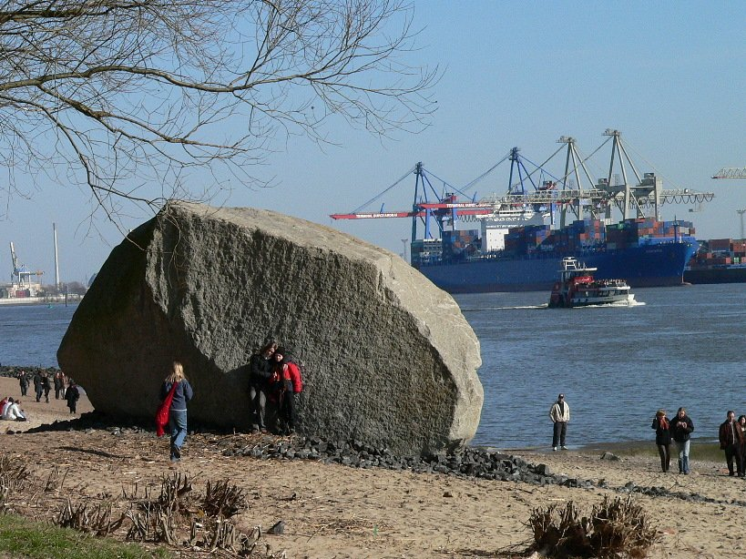
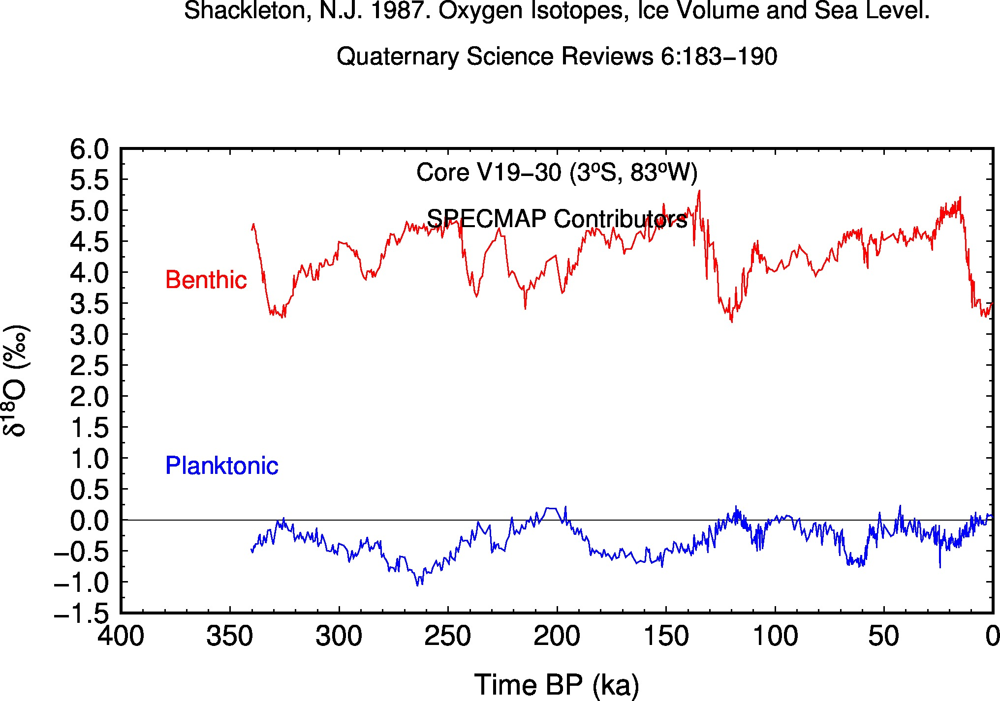

|
|
Ice-age dynamicsGeorg Kaufmann |
Master course tought at Freie Universität Berlin in the M.Sc. Geological Sciences program.
This lecture introduces ice ages as a tool to examine the dynamical behaviour of both the Earth’s surface and the Earth’s interior.
Georg Kaufmann
Freie Universität Berlin
Department of Geosciences, Institute of
Geological Sciences, Geophysics Section
Malteserstr. 74-100, 12249
Berlin, Haus D, Raum D127
georg.kaufmann@fu-berlin.de
The lecture series is compiled as handouts in pdf format (click on title):
|
0.
Overview
|
1. Ice on
Earth  |
2.
Geomorphology
|
|
3. Dating
|
4.
Paleoclimate
 |
5. Karst
|
|
6. Earth
orbit |
7. Ice
models |
8. Sea
level |
|
9.
Landscape |
10. GIA
|
11.
Outlook |
The exercises are mainly jupyter notebooks, which
can be accessed interactively through

A list of notebooks can be found here:
git clone https://github.com/georgkaufmann/lecture_iceage.gitWe use Git for versioning.

This project is licensed for classroom use only.